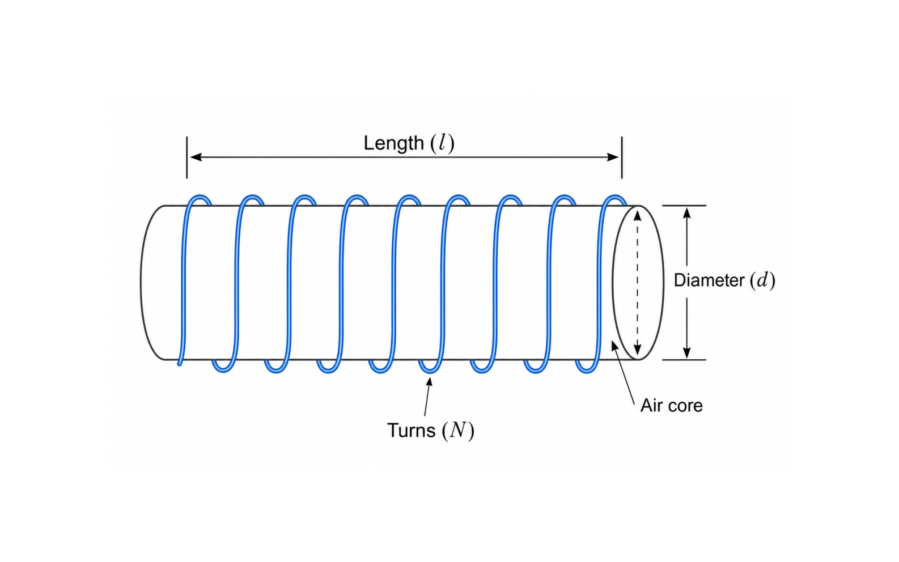

Back to tools
Instrument 002 / Magnetics
Air-Core Inductance Calculator
Estimate a single-layer air-core coil using Wheeler's formula and compare it with the ideal long-solenoid model.

Wheeler single-layer coil
Ideal air-core solenoid
Cross-sectional area
Inductive reactance
Stored magnetic energy
Model limits
Wheeler's expression returns inductance in microhenries when diameter d and winding length l are entered in inches. It is intended for a single-layer cylindrical air-core coil.
The ideal solenoid comparison neglects end effects, winding pitch, wire diameter, insulation, lead inductance, and parasitic capacitance. Physical measurements will diverge as the winding becomes short, multilayered, or self-resonant.